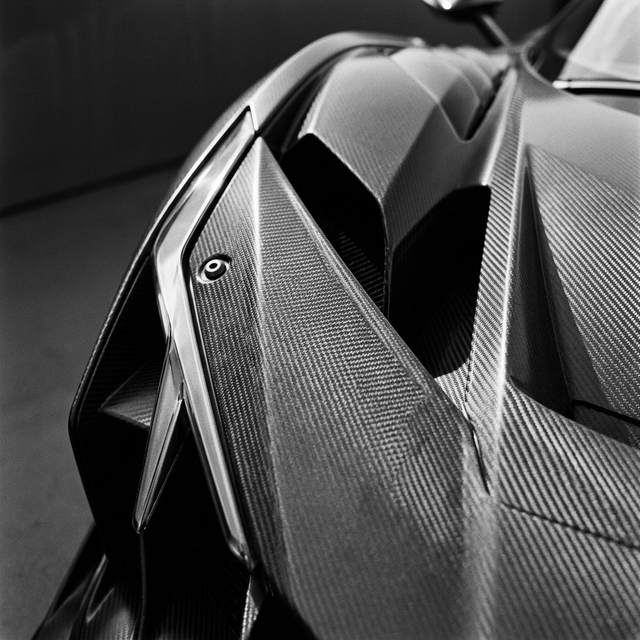
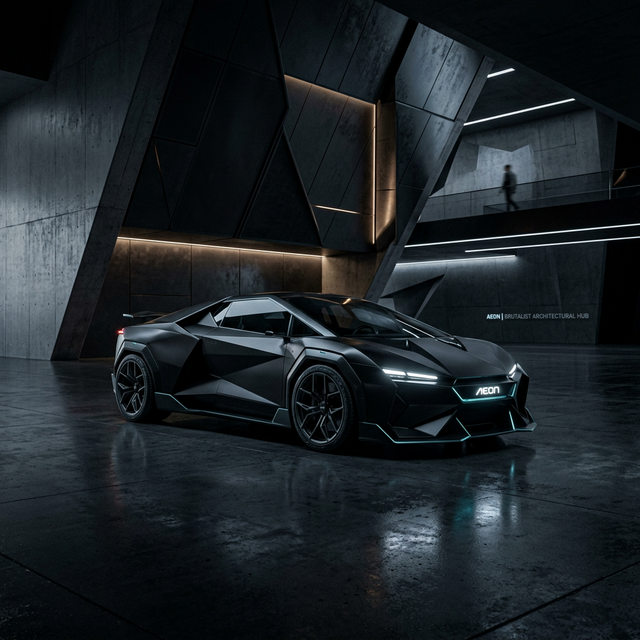

1963 yılından bu yana temel formunu neredeyse hiç kaybetmemiş, sadece her yeni nesilde teknolojik bir mükemmelliğe doğru evrilmiş yegane tasarım: Porsche 911. Arkada konumlu efsanevi boksör motoru, kesintisiz inen tavan çizgisi ve ikonik yuvarlak farlarıyla otomotiv dünyasının tartışmasız en saygın ve tanınabilir silüetidir.
Pek çok marka her on yılda bir yepyeni, devrimsel tasarımlar ararken, 911 tasarımcılarının görevi çok daha zordur: Efsanenin köklerini bozmadan, onu modern aerodinamik ve güvenlik standartlarına uygun hale getirmek. Kült haline gelmiş bu araç, her dönem hem klasik retro otomobil severlere hem de modern teknoloji tutkunlarına aynı anda hitap etmeyi başaran nadir makinelerdendir.

Virajların Gerçek Ustası
Doğası gereği arka ağırlıklı (rear-engine) olan bu sıra dışı yapı, yıllar süren takıntılı Alman mühendisliği sayesinde büyük bir fiziksel dezavantajdan, mükemmel bir avantaja dönüşmüştür. Viraj çıkışlarında arka lastiklerin yeri adeta ısırarak tutunması ve aracı mermi gibi ileri fırlatması, 911'in kendine has sürüş keyfinin temelidir.
Manuel şanzımanın getirdiği mekanik his, direksiyonun yolu avuçlarınızın içine aktaran inanılmaz iletişimi ve altı silindirli boksör motorun o kendine has mekanik çığlığı, sürücü ile otomobil arasındaki saf bağı oluşturur. Günlük kullanıma en uygun spor otomobil ünvanını yıllardır kimseye kaptırmayan 911 modeli, sabahları çocukları okula bırakıp öğleden sonra pistte tur zamanı kırabileceğiniz yeryüzündeki çok az sayıda araçtan biridir.

Dayanıklılık konusunda Porsche'nin rakiplerinden fersah fersah önde olması da bu aracın sadece koleksiyonerlerin klimalı garajlarında değil, gerçek yollarda milyonlarca kilometre devirmesini sağlamıştır. 911, bir vitrin süsü değil, kullanılması ve sınırlarının zorlanması için üretilmiş bir makinedir.
"O sadece bir ulaşım aracı veya hız makinesi değil, nesilden nesile aktarılan, kusursuz işleyen mekanik bir saat gibidir."
İster pazar sabahı sahil yollarında camlar açık sakin bir gezinti olsun, ister "Green Hell" lakaplı efsanevi Nürburgring pistinde saniyenin onda biri için verilen bir rekor mücadelesi... Porsche 911 mirası, her yola uyan çok yönlü karakteriyle tüm dünyada otomobil kültürünün baş köşesinde yer almaya devam edecek.